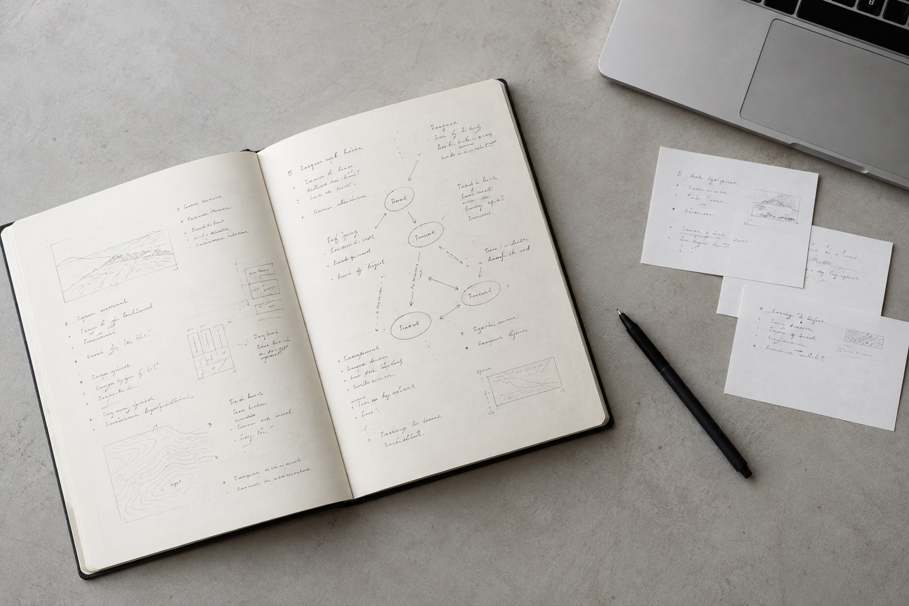

AI 产品经理
在用户需求与技术可能之间，寻找值得创造的答案。
产品概念 / 01
让重复的工作，拥有更聪明的解法。
体验设计 / 02
探索更自然、更可控的人机协作。
个人系统 / 03
让零散的信息，成为生长的知识。

张达玮，AI 产品经理。
我关注 AI 如何成为真正有用的产品。从理解问题、定义体验，到原型验证，我希望把复杂的技术，转化为清晰、自然的使用体验。
从问题出发，在构建中思考，让复杂回归简单。
页面中的项目为概念展示，摄影为 AI 生成的场景配图。